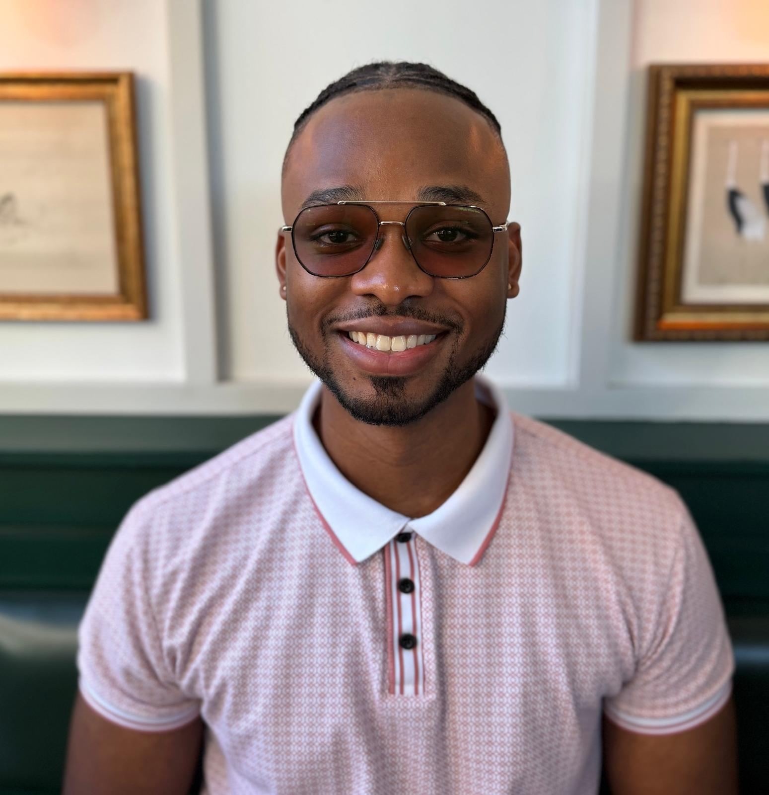

Kahmile A. Whitby
Introduction
With a strong hands-on background, I am passionate about the product development process. My interests currently lie at the intersection of engineering and my lived experience with low vision. I am interested in helping consumer product companies make interfaces that are also usable by people with disabilities.
Professional Interests
Robotics · Accessible Product Design · Hardware Accessibility Consulting · Assistive Technology
Contact
My interests beyond engineering include:
- Fashion design
- Jewelry design
- Cryptocurrency trading
- Sunshine and beaches
- Adaptive sports
- Active outings: mini golf, axe throwing, ice skating, skiing, and more